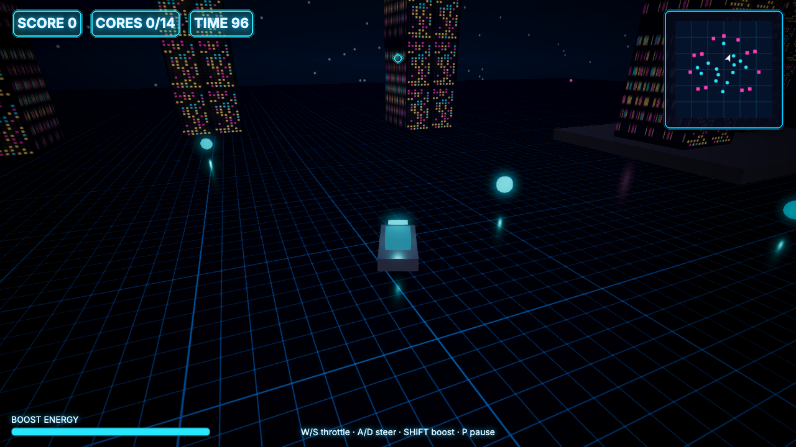
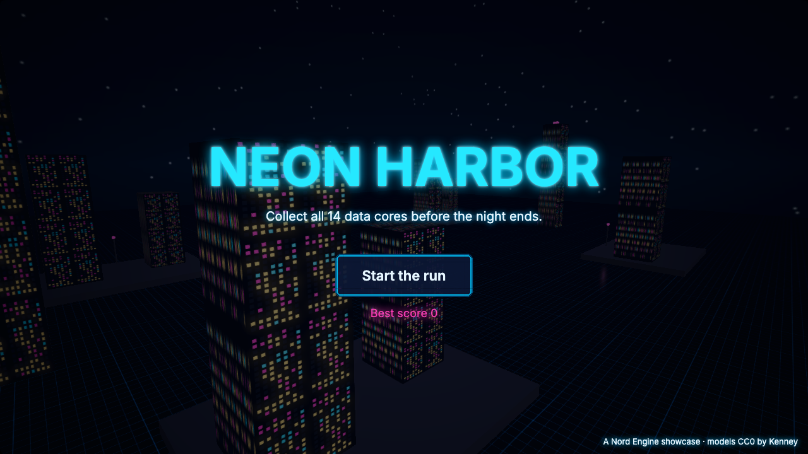
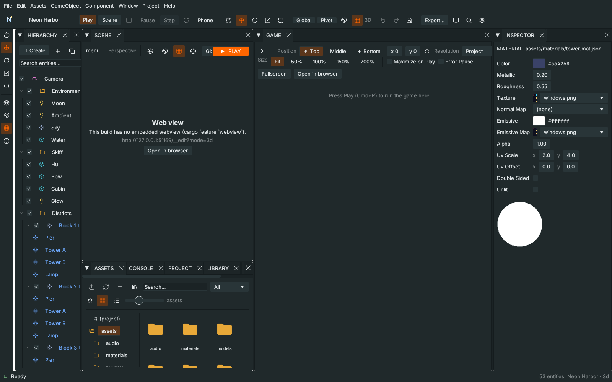
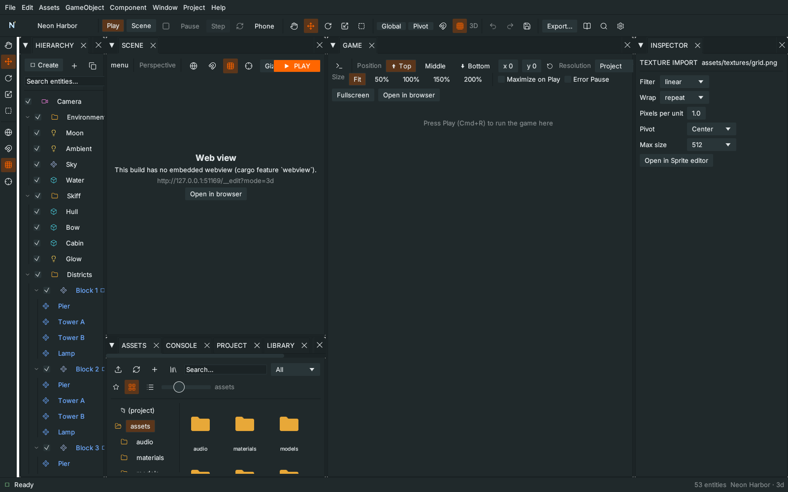
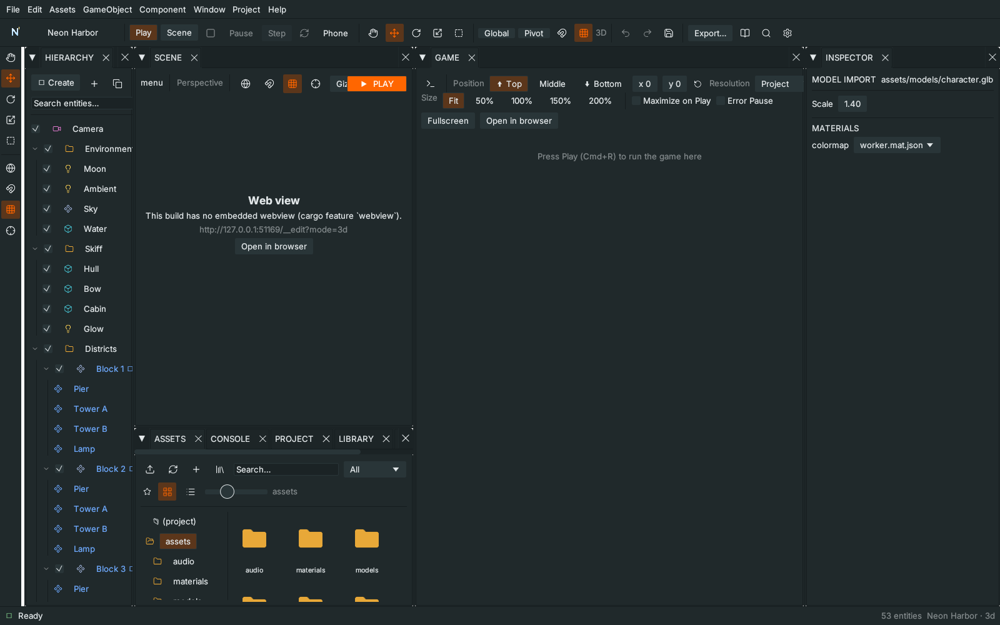
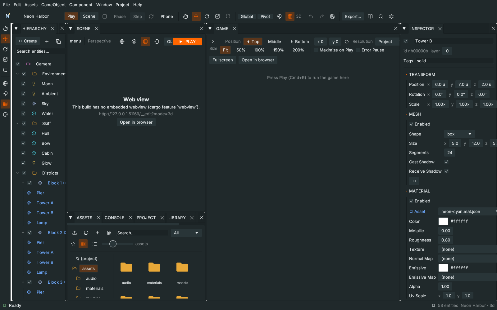
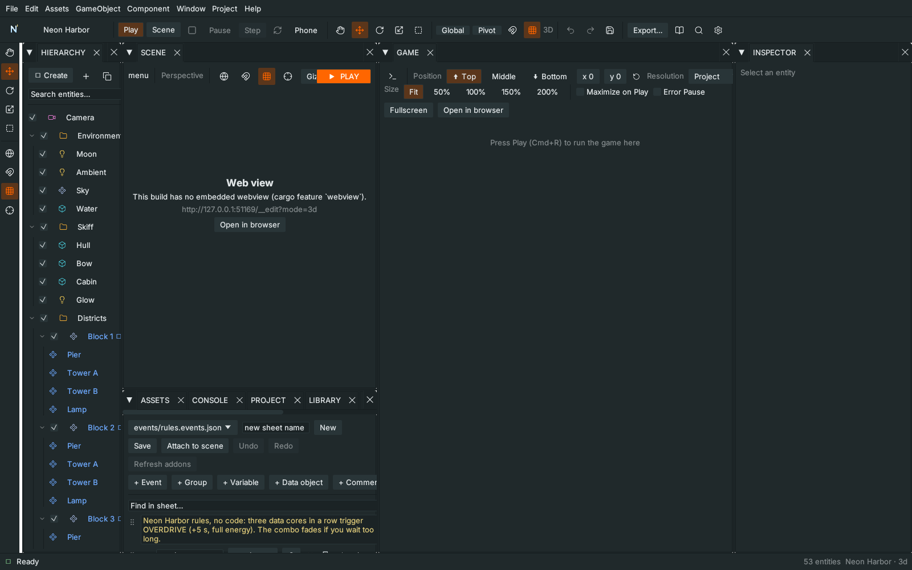
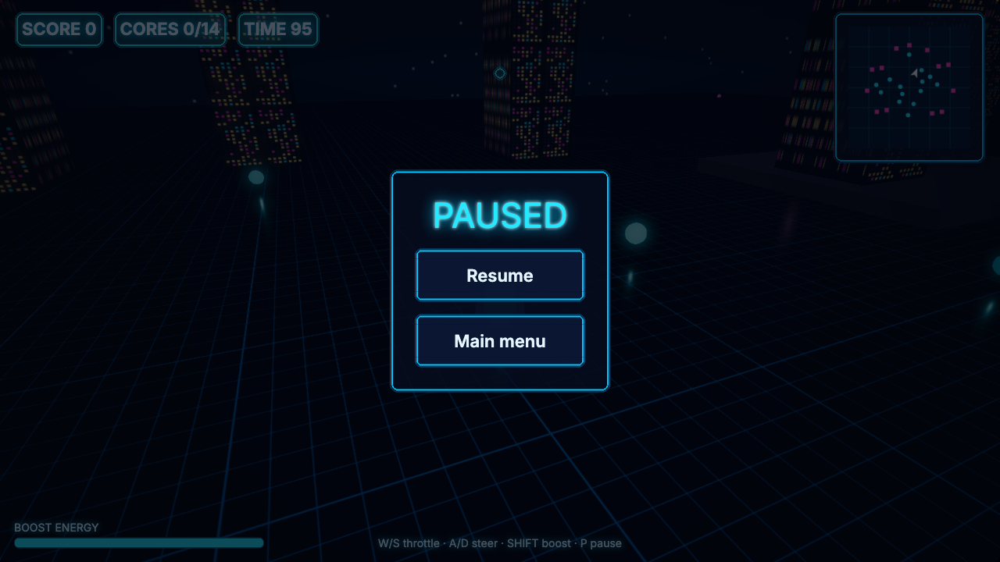
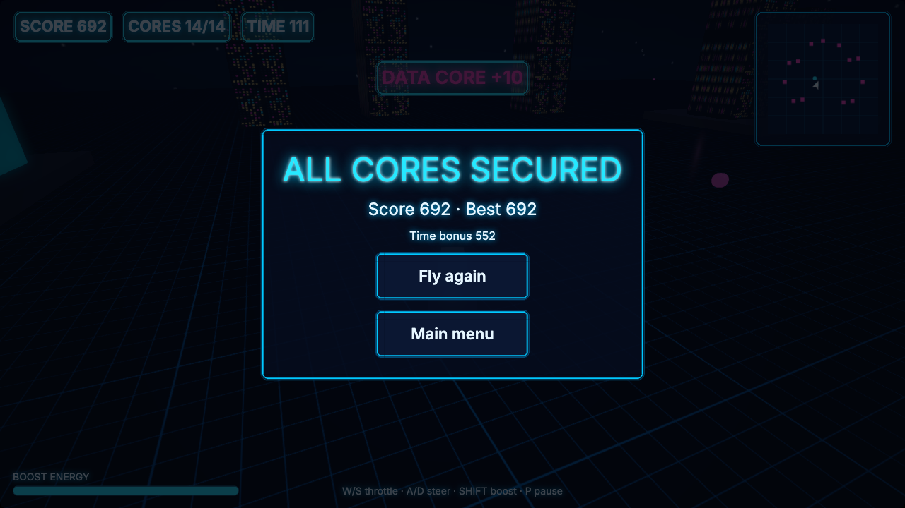

T48 Neon Harbor, the full Unity-style showcase
Result: you fly a neon skiff through a 3D city at night, collect 14 data cores, and read everything on a 2D layer (HUD, minimap, menus). Then you take the project apart with every editor feature added in the Unity-style workflow, change something with each one, and export it. Allow 60 to 90 minutes. Start from: the finished project below, no empty project needed.
Download: Complete Neon Harbor project, source, art and sounds. Extract it into a writable folder, open nord.project.json in Nord and press Play (F5). No npm, account or external download is needed. The same project lives in the engine repository as examples/neon-harbor and is regenerated by tools/make-neon-harbor.py.

0. Play it first#
- Extract the zip, open the project in Nord (File ▸ Open project…), choose Window ▸ Layout ▸ Unity 2 by 3.
- Press Play (F5). The title screen flies over the harbour. Press Start the run.
- W/S throttle, A/D steer, Shift boost (it drains the energy bar), P or Esc pause. Collect three cores quickly: the OVERDRIVE banner adds five seconds. Collect all 14 before the clock runs out.

1. What is in the project#
| Folder | What it holds | Feature you meet |
|---|---|---|
scenes/ |
menu.scene.json, harbor.scene.json |
Scenes, Hierarchy groups, lock and hide |
prefabs/ |
tower, tower-tall (variant), block (nested), lamp, orb |
Prefabs, variants, child overrides |
assets/materials/ |
9 *.mat.json |
Material assets, lit preview |
assets/textures/, assets/ui/ |
generated pictures + .meta.json import settings |
Texture import |
assets/models/ |
character.glb + .meta.json |
Model import, material remap |
scripts/ |
skiff.js, orb.js, harbor.js, menu.js, cameras, helpers |
Unity-style scripting |
ui/ |
hud, menu, pause, gameover, banner (prefab), neon.skin.json |
UI Designer |
events/rules.events.json |
the combo rules | Event sheet |
graphs/ |
toasts + toast (subgraph) |
Node graph |
2. The Scene view#
- Open the Scene tab. Alt + left-drag orbits, middle-drag pans, the wheel zooms. Hold the right mouse button and use WASD (Q down, E up, Shift faster) to fly like in Unity. Alt + right-drag zooms.
- Click an axis cone of the axis gizmo in the top-right corner of the view: the camera looks along that axis. Click it again on the opposite side.
- Press Q W E R T for Hand, Move, Rotate, Scale, Rect. Select Skiff in the Hierarchy and press F to frame it, Shift+F to frame everything.
- Rebind a shortcut: Settings ▸ Shortcuts, click the key box of Move tool, press Y. Now Y moves and W does nothing. Click ↺ to restore it. Orange boxes mean two actions share the same keys.
3. The Hierarchy#
The harbour is organised in groups: Environment, Skiff, Districts, Lamps, Data cores, Workers, Debug markers, Director.
- Lock: hover Water and look at its padlock: it is on. Click in the Scene view where the water is: you select nothing, so you cannot drag the sea by accident. Unlock it, click it, lock it again. (The game never sees this flag.)
- Hide: Debug markers has the eye-off icon on. Toggle it: two pink balls appear in the Scene view and nowhere in the game.
- Focus: double-click Skiff in the Hierarchy: the Scene tab comes forward and frames it.
- Create: GameObject menu: presets with icons. Add a Cube under Workers, then Cmd+Z it away.
4. Several objects at once#
- Open the Data cores group. Click Orb 1, Shift-click Orb 4 and Orb 7. The Inspector says 3 ENTITIES SELECTED.
- Choose W. Toolbar Pivot: the gizmo sits on the first orb. Switch to Center: it moves to the middle of the three. Drag the arrows: all three orbs move together. R/E rotate and scale them about that centre. One Cmd+Z undoes the whole drag.
- Marquee: drag a rectangle on empty space in the Scene view; every unlocked object whose centre is inside gets selected (locked ones are skipped).
- Type
1.4into the Position y of the Inspector with all three selected: they all get it.
5. Materials#

6. Texture import#

7. Model import and material remap#

8. Prefabs: instances, variants, nested prefabs and child overrides#

9. The Inspector#
- Enabled per component: select Lamp 4 and look at its components: a
light(spot) with Enabled unticked. The spare light is kept but not created in the game. Tick it, press Play, untick it. - ⋮ menu of a component: Reset, Copy / Paste values, Move up / down, Docs (F1), Remove.
- + Add component is searchable and grouped: Rendering, Physics, Audio, UI, Gameplay, Effects. Type
partto find Particles. - Lock the Inspector with the padlock, click around, unlock it. Debug mode (bottom) shows the entity as raw JSON.
- Component help: hover a component header and press F1: the manual page of that component opens.
10. The scripts (Unity style)#
All gameplay scripts extend MonoBehaviour and use Awake / Start / Update / LateUpdate, FindWithTag, Destroy, GameManager.instance exactly like the C# you may know. Attributes show up in the Inspector (try changing maxSpeed of the Skiff's skiff.js).
orb.js, the data core:
// A data core: collected when the skiff gets close. Tells the game ('orb' event); the event sheet and the graph react.
import { MonoBehaviour, GameManager } from 'nord';
export default class Orb extends MonoBehaviour {
static attributes = { value: { type: 'number', default: 10 }, radius: { type: 'number', default: 1.8 } };
Start() { this.skiff = this.FindWithTag('player'); }
Update() {
if (!this.skiff || this.skiff.destroyed || this.collected) return;
const a = this.entity.worldPos, b = this.skiff.worldPos;
if (Math.hypot(a[0] - b[0], a[2] - b[2]) > this.radius + 0.8) return;
this.collected = true;
GameManager.instance?.AddScore(this.value);
this.game.audio?.play('assets/audio/sfx/coin.wav', { bus: 'sfx', volume: 0.8 });
this.game.events.emit('orb', { value: this.value, at: a });
this.Destroy();
}
}It tells the game with a normal event (orb); it does not know the HUD, the event sheet or the graph. They listen.
skiff.js, the player:
// The player's skiff: throttle/steer/boost, a little banking, obstacle push-out and the world bounds.
import { MonoBehaviour, SerializeField, Mathf } from 'nord';
export default class Skiff extends MonoBehaviour {
static attributes = SerializeField({ maxSpeed: 14, boostSpeed: 26, accel: 16, turnRate: 92, bounds: 70 });
Awake() {
this.speed = 0;
this.heading = 0; // degrees, 0 = +Z
this.energy = 100;
this.boosting = false;
this.frozen = false;
this.solids = [];
}
Start() {
// everything tagged "solid" (towers, piers) becomes a rectangle the skiff cannot enter
for (const e of this.FindGameObjectsWithTag('solid')) {
const m = e.getComponent('mesh')?.data?.size;
if (!m) continue;
const p = e.worldPos, s = e.scale;
this.solids.push({ x: p[0], z: p[2], hx: (m[0] * s[0]) / 2, hz: (m[2] * s[2]) / 2 });
}
}
Update(dt) {
if (this.frozen) return;
const input = this.game.input;
const throttle = input.axis('down', 'up');
const steer = input.axis('left', 'right');
this.boosting = input.down('boost') && throttle > 0 && this.energy > 0;
const top = this.boosting ? this.boostSpeed : this.maxSpeed;
const target = throttle * top * (throttle < 0 ? 0.4 : 1);
this.speed = Mathf.MoveTowards(this.speed, target, this.accel * dt);
this.heading += steer * this.turnRate * dt * Math.min(1, Math.abs(this.speed) / 4 + 0.25);
this.energy = Math.min(100, Math.max(0, this.energy + (this.boosting ? -28 : 7) * dt));
const r = (this.heading * Math.PI) / 180;
let x = this.entity.pos[0] + Math.sin(r) * this.speed * dt;
let z = this.entity.pos[2] + Math.cos(r) * this.speed * dt;
for (const s of this.solids) { // push the skiff out of boxes (radius 1.3)
const dx = x - s.x, dz = z - s.z, ox = s.hx + 1.3 - Math.abs(dx), oz = s.hz + 1.3 - Math.abs(dz);
if (ox > 0 && oz > 0) { if (ox < oz) x += Math.sign(dx || 1) * ox; else z += Math.sign(dz || 1) * oz; this.speed *= 0.6; }
}
x = Math.max(-this.bounds, Math.min(this.bounds, x));
z = Math.max(-this.bounds, Math.min(this.bounds, z));
const bob = Math.sin(this.game.time.elapsed * 3) * 0.06;
this.entity.pos = [x, 0.35 + bob, z];
this.entity.rot = [Math.sin(this.game.time.elapsed * 2) * 1.5, this.heading, -steer * Math.min(1, Math.abs(this.speed) / 10) * 9];
}
}harbor.js, the director (timer, HUD, minimap, pause, win/lose):
// The director of a run: HUD, timer, minimap, pause, win/lose. Scripts, an event sheet and a graph all take part.
import { MonoBehaviour, GameManager } from 'nord';
export default class Harbor extends MonoBehaviour {
static attributes = { timeLimit: { type: 'number', default: 100 }, orbsToWin: { type: 'number', default: 14 } };
async Start() {
this.left = this.timeLimit;
this.collected = 0;
this.over = false;
this.skiff = this.Find('Skiff');
this.skiffScript = this.skiff?.scripts.find((s) => s.constructor.name === 'Skiff');
this.hud = await this.game.ui.load('ui/hud.ui.json');
this.pause = await this.game.ui.load('ui/pause.ui.json');
this.end = await this.game.ui.load('ui/gameover.ui.json');
this.pause.on('resume', () => this.SetPaused(false));
this.pause.on('menu', () => this.game.loadScene('scenes/menu.scene.json'));
this.end.on('retry', () => this.game.restart());
this.end.on('menu', () => this.game.loadScene('scenes/menu.scene.json'));
this.offs = [
this.game.events.on('orb', () => this.OnOrb()),
this.game.events.on('overdrive', () => { this.left += 5; if (this.skiffScript) this.skiffScript.energy = 100; this.game.audio?.play('assets/audio/sfx/heal.wav', { bus: 'sfx' }); }),
];
this.game.audio?.play('assets/audio/music/music_action.mp3', { bus: 'music', loop: true, volume: 0.35 });
// the game loop stops while paused, so P / Esc is a plain DOM key listener (the loop cannot poll it)
this.onKey = (e) => { if (!e.repeat && (e.code === 'KeyP' || e.code === 'Escape')) this.SetPaused(!this.paused); };
addEventListener('keydown', this.onKey);
this.Refresh();
this.lowWarned = false;
}
OnDestroy() { removeEventListener('keydown', this.onKey); for (const o of this.offs ?? []) o(); for (const s of [this.hud, this.pause, this.end]) s?.destroy(); this.game.audio?.stopMusic?.(); }
OnOrb() {
this.collected++;
if (this.collected >= this.orbsToWin) this.Finish(true);
this.Refresh();
}
SetPaused(on) {
if (this.over) return;
this.paused = on;
on ? this.pause.show() : this.pause.hide();
on ? this.game.pause() : this.game.resume();
}
Finish(won) {
if (this.over) return;
this.over = true;
const gm = GameManager.instance;
const best = gm?.SaveHighScore('neon-harbor-best') ?? 0;
const bonus = won ? Math.round(this.left * 5) : 0;
gm?.AddScore(bonus);
this.end.set({ result: won ? 'ALL CORES SECURED' : 'NIGHT FALLS', score: gm?.score ?? 0, best: Math.max(best, gm?.score ?? 0), detail: won ? `Time bonus ${bonus}` : `${this.collected} of ${this.orbsToWin} cores` });
gm?.SaveHighScore('neon-harbor-best');
if (this.skiffScript) this.skiffScript.frozen = true;
this.game.audio?.play(won ? 'assets/audio/music/jingle_victory.mp3' : 'assets/audio/music/jingle_game_over.mp3', { bus: 'music' });
this.end.show();
}
Refresh() {
if (!this.hud) return;
const gm = GameManager.instance;
this.hud.set({ score: gm?.score ?? 0, orbs: `${this.collected}/${this.orbsToWin}`, time: Math.ceil(this.left), energy: (this.skiffScript?.energy ?? 100) / 100 });
}
Update(dt) {
if (this.over || !this.hud) return; // Start() is async: the screens may not be loaded yet
this.left -= dt;
if (this.left <= 10 && !this.lowWarned) { this.lowWarned = true; this.game.events.emit('low-time'); }
if (this.left <= 0) { this.left = 0; this.Finish(false); }
this.tick = (this.tick ?? 0) + dt;
if (this.tick > 0.08) { this.tick = 0; this.Refresh(); this.DrawMinimap(); }
}
DrawMinimap() {
const cv = this.hud.get('minimap')?.el; const g = cv?.getContext?.('2d'); if (!g) return;
const S = cv.width, k = S / 150; // 150 world units across (bounds are +-70)
const px = (x) => S / 2 + x * k, pz = (z) => S / 2 - z * k;
g.clearRect(0, 0, S, S);
g.fillStyle = '#04122a'; g.fillRect(0, 0, S, S);
g.strokeStyle = '#0b3a5a'; g.lineWidth = 1;
for (let i = 1; i < 6; i++) { g.beginPath(); g.moveTo((S * i) / 6, 0); g.lineTo((S * i) / 6, S); g.moveTo(0, (S * i) / 6); g.lineTo(S, (S * i) / 6); g.stroke(); }
g.fillStyle = '#ff3fb8';
for (const e of this.FindGameObjectsWithTag('solid')) { const p = e.worldPos; g.fillRect(px(p[0]) - 3, pz(p[2]) - 3, 6, 6); }
g.fillStyle = '#25e8ff';
for (const e of this.FindGameObjectsWithTag('orb')) { const p = e.worldPos; g.beginPath(); g.arc(px(p[0]), pz(p[2]), 3, 0, 7); g.fill(); }
if (this.skiff) {
const p = this.skiff.worldPos, h = (this.skiff.rot[1] * Math.PI) / 180;
g.save(); g.translate(px(p[0]), pz(p[2])); g.rotate(h);
g.fillStyle = '#ffffff'; g.beginPath(); g.moveTo(0, -7); g.lineTo(5, 6); g.lineTo(0, 3); g.lineTo(-5, 6); g.closePath(); g.fill(); g.restore();
}
}
}A few details to notice. Start() is async because it loads three UI screens, so Update guards with !this.hud. The pause key is a DOM listener, because the game loop stops while paused. GameManager is the engine's ready-made score store; scripts/game-manager.js just makes it non-persistent so every run starts at zero.
11. The UI Designer (the 2D layer)#
Open the UI Designer tab (or Window ▸ Editors ▸ UI Designer), type ui/hud.ui.json and press Open.
- Canvas scaler: select the root node. Canvas scaler is Scale with screen, reference 1280×720, match 0.5. Change the preview size to
390x844 Phone: the HUD scales instead of overflowing. Set the mode to Off to see the difference. Put it back. - Resize handles: select mapFrame (the minimap frame, anchored top-right). Eight handles appear on the preview: drag the left-middle one. The right edge stays where it is, whatever the anchor. Hold Ctrl/Cmd to resize without rounding.
- UI prefab: banner is an
instanceofui/banner.ui.json. Open prefab edits that file, Unpack puts its nodes inline, Make UI prefab… (on any other node) saves the selection as a new file and replaces it with an instance.hudand the end screen both use the same banner. - Sprite states: open
ui/pause.ui.json, select resume. The Sprite: normal / hover / pressed / disabled fields are four pictures fromassets/ui/plus one 9-slice. In the game the button changes picture on hover and press. - Skin tint: open
ui/neon.skin.json(Styles tab): the.chiprule usesassets/ui/chip.png, a white picture, with"tint": "#25e8ff". Change the tint to#ff3fb8: all score chips turn pink with no new art. - Copy and paste: select a chip, Cmd+C, Cmd+V. Anchor grid: the 3×3 buttons under Anchor pin a node to a corner.
- The minimap is a
canvasnode (minimap).harbor.jsdraws on it with the normal canvas API: that is the 2D drawing inside the 3D game.
12. The event sheet (no code)#

13. The node graph and a subgraph#
- Open the Graph tab and
graphs/toasts.graph.json. Three red event nodes react to game events (orb,overdrive,low-time): they play a sound and call Run Graph File ongraphs/toast.graph.json. - Open
graphs/toast.graph.json: On Start → Set UI Text (toast = variable a) → Delay 1.4 s → Set UI Text (toast = empty). That is the subgraph: the call node passes itsainput in as the variablea. - Make your own subgraph: in
toasts.graph.jsonselect the Audio Play and Run Graph File nodes of theoverdrivechain (two nodes) and press Make subgraph. They move intotoasts-sub1.graph.jsonand one Run Graph File node takes their place. (One flow link must enter the selection, at most one leave it.) Cmd+Z is not available for this; delete the new file if you do not want it. - Live flow: keep the Graph tab open and press Play. Each time a core is collected the connected nodes flash green.
- Add a Group with a title, use the minimap, Arrange, F1 for the node reference.
14. The Game view and tools#
Resolution drop-down, Maximize on Play, Error Pause (pauses on the first error), the camera button saves screenshots/shot-1.png, Stats shows fps. Window ▸ Profiler lists the slowest event-sheet events. The Window menu lists every panel in the Panels and Editors submenus, so a closed panel always comes back; Reset layout restores everything.

15. Build it#
- File ▸ Build Settings… (Shift+Cmd+B). Both scenes are in the build;
menuis the start scene. Press Build And Run: a single-file page opens in your browser. - Android / iOS ▸ Mobile project writes
dist/mobile/with the game inwww/plus a Capacitor wrapper. In that folder:npm install,npx cap add android(orios), thennpm run android. You need Android Studio or Xcode on your machine; the engine does not bundle them. - Desktop app… makes a Mac/Windows/Linux app with the same build. The export scans for external web addresses and fails if it finds one: Neon Harbor is fully offline.

Check yourself:
- Editing
tower.mat.jsonor thetowerprefab changed every tower; the tall variant followed the roof-light change. - Block 3's Tower B is cyan through an override stored on the instance.
- The HUD still fits on the phone preview thanks to the canvas scaler.
- Collecting three cores in a row showed OVERDRIVE (event sheet → event → graph → subgraph → HUD).
Build And Runopened a working page.
Make it yours#
- Add a fourth district: duplicate Block 4, move it with the gizmo, add three more orbs (duplicate an orb under Data cores, Cmd+D).
- Make a rush variant: a second prefab variant of
orbwithvalue: 25; place a few; give them theneon-pinkmaterial. - Add a second chip to the HUD with Make UI prefab and a new variable set from
harbor.js. - Add a sound to the OVERDRIVE chain in the graph, or a new rule to the event sheet (for example every 20 s emit low-time).
- Replace
character.glbwith your own model (drop a.glbintoassets/models/), then set its scale and material remap.
Troubleshooting#
| Symptom | Fix |
|---|---|
| The game starts but the HUD is missing | Look at the Console. harbor.js loads ui/hud.ui.json; a typo in a UI file shows up there. |
| The skiff cannot move | The actions up down left right boost pause are listed under input.actions in nord.project.json. |
| Towers look flat grey | The emissiveMap needs assets/textures/windows.png; check the material's Emissive Map field. |
| A button has no picture | Check the paths of the four sprite fields and the 9-slice numbers (14 14 14 14). |
| Nothing flashes in the Graph tab | The Graph tab must stay open while the game runs, and the game must be served by Nord (Play), not opened from disk. |
| Event sheet highlight missing | It works for sheets without include blocks and only while the Events tab is visible. |
Reference: Unity-style workflow, UI Designer, UI scenes reference, Node graphs, Event sheets, 3D guide, Export. Previous: T47 The Unity-style workflow.